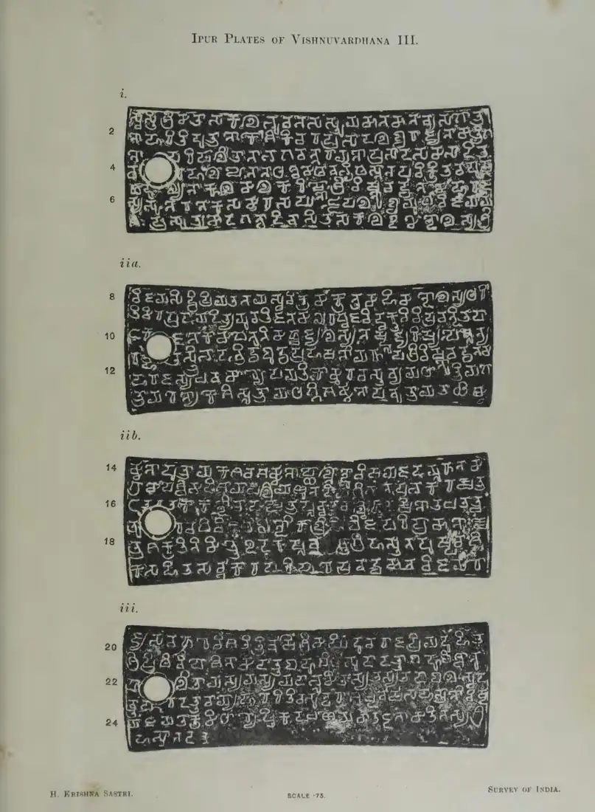
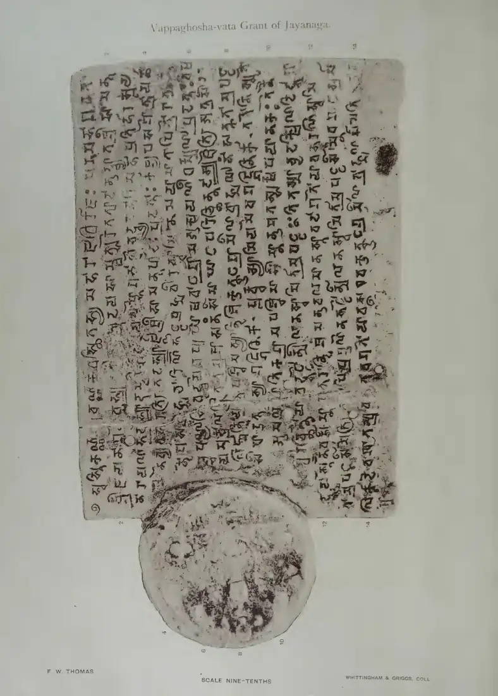

Vappaghoshavata grant of Jayanaga
No. 7.—VAPPAGHOSHAVATA GRANT OF JAYANAGA.
The record belongs to the Museum of Perth, to the authorities of which I am indebted for permission to edit and reproduce it. It was presented to the Museum some time ago by Mr. J. Greig of Calcutta. The Museum possesses a paper signed by him and containing a copy of a
1 This curious expression is meant for trayōvimśē varshē.
2 The th of pōthī slightly differs in shape from the th of Prithivi and of aṭvamēth(dh-āvabhri(bhṛi)tha-in-re 4; but it cannot be r, as it has been read in the Annual Report on Epigraphy for 1919-20, p. 99 f. Cf. the x of Eliyēru- (l. 15) and -ereya (l. 24).
Instead of -duhítā (l. 20) and -nāma we would have expected -duhitrā and -nāmnyā. The next word is a superfluous repetition of dattām in line 18.
3 Read: bhūmis. 5 Read -dattām vd. 6 Read harēta.
7 Read shashṭiṇ. 8 Read perhaps Tēn-āsya.
9 Cf. above, Vol. V, p. 121, n. 6, and Vol. XII, p. 62, n. 2. In Vol. X, p. 48, text line 8, rcad कीट्व° for कीरडे.
10 As suggested in the Annual Report on Epigraphy for 1919-20, p. 100, kada-ereya is the same as kaṭaka-rāja, 'the chief of the royal camp,' for which see above, Vol. VII, p. 184 f., and Vol. IX, p. 49 f. According to Kittel'n Kannada-English Dictionary, 9, v. ere. 1, the Kanarese noun ereya. (= Tamil iraivan) is a synonym of the Sanskrit rāja.
Plate 1 is bound after this page.
somewhat unsuccessful attempt to translate and annotate the plate, which bears the subscription: "R. Mittro, Asiatic Society, 6th December 1854," and to which Mr. Greig has prefixed the note "Translation of a Copper Plate found in the Indigo Estate at Mallia1 by one of Mr. James Smith's villagers, and presented to me by that gentleman in January 1855."
It consists of a single rectangular plate of copper, slightly irregular in shape, about in. in width and in. in height, with a circular seal about 3 in. in diameter soldered on the proper left side. The seal, which is very much worn, shews traces of an upright female figure, apparently LakshmI, with either one or two elephants performing the kumbhābhishēka over her, while in the exergue below there are the remains of a now illegible inscription. The plate itself, which is inscribed on one side only, is in very good preservation, except for a crack running down it, which has been repaired by a small rivet. Two or three letters at the end of l. 14 and a whole line of writing immediately following the latter have been deliberately erased.—The characters, which have been picked out comparatively recently with white paint, are of a well-formed upright Gupta type, apparently of the latter half of the sixth century, and average in height a little less than in. In most respects they are archaic enough to justify an ascription to the fifth century; but the forms of the initial i (iti, l. 11) and the bipartite y (passim), make the latter date more probable. The conjunct nasais and consonants are used in preference to the simple consonants with preceding anusvāra (e.g. -sambhōga-, l. 3). V and b are confused (e.g. -sāmbatsarē, l. 2, Audumvarī[ka-], l. 3, but sa-vrahmachāriṇē, l. 5, -vrāhmaṇānām, l. 8, etc.). Internal ā is denoted either by a doubly waving line curving upwards towards the right from the top of the shaft (cf. the 8th and 18th syllables of l. 1), or by a short upward tick at the right corner of the top (cf. the 14th syllable of l. 1), or by a downward loop from the right corner of the top (cf. the 15th syllable of l. 2). Internal ē is represented usually by a waving line similar to the first type of ā but in the opposite direction (e.g. the 18th syllable of l. 2), rarely by a perpendicular tick on the left corner of the top (-svāminē, l. 5) Internal ō is made with the waving ē combined with either the ticked or the downward, looped ā. The curve of internal ī is sometimes single (e.g. śrī, l. 2, -sīmā, l. 9), sometimes double (e.g. grāmīṇa-, l. 14). The angularity of the base of the th (dāsyath=ēti, l. 7) is note worthy; so also is the combination of the syllable ti with a following daṇḍa, in which the curving line denoting i is carried around the t and upwards to the right of it, terminating there in a small horizontal tick on a level with the top of the t (see ll. 4, 7, 13), a peculiarity which seems to have been affected by Eastern scribes, as we find it again even as late as the Tālchēr plates of Gayāḍa-Tuṅgadēva (see Nagendranath Vasu's Archæol. Survey of Mayurabhanja, plate to face p. 154. and J. As. Soc. Beng., Vol. XII, 1916, No. 6, pl 4, last line).—The cursive rya in Sūrya- (l. 3) is also significant. The language is Sanskrit prose, becoming in parts loose and almost dialectal. As already remarked b and v are confused. Lexically we may note the words ākshayaṇl-dharman (l. 6); gaṅginikā (l. 9 bis), the modern gāṅginā, which possibly may be used here as a common noun meaning "āry river-bed" (see above, Vol. XII, p. 66, n. 3, and p. 78, n. 5), but more probably is the name of a particular river (see below); and tāmra-paṭṭa (ll. 8, 11, 13, bis), which here, instead of its primary meaning of "copper-plate" (as above, Vol. VII, pp. 87, 95, 98, Vol. VIII, pp. 152, 157-59), signifies an estate granted under a warrant engraved on a copper-plate.2
The object of the document is to specify the bounds of a certain village named Vappaghōshavāṭa granted to the Brāhmaṇ Bhaṭṭa Brahmavīra Svāmin by the Sāmanta Nārāyan-bhadra, and is dated in the reign (the word qualifying the saṅvats-ra is unfortunately effaced)
1 As I am unable to locate "Mallia" with certainty, I have judged it advisable to designate this charter by the name of the village granted in it.
2 Cf. above, Vol. II, p. 338, grāmam. . . tāmrakam. . . lēbhē The word paṭṭ by itself is sometimes used to denote a piece of land: cf. Gupta Inscr., p. 104 & n.
of king Jayanāga, who was at the time residing in Karṇasuvarṇaka, and who, to judge from his title of Mahārājādhirāju, must have been a ruler of considerable importance. The document was drawn up in accordance with Narāyaṇabhadra's instructions by his commissioner (vyavahārin) Sūryasēna. On the principles of this administrative hierarchy the student may profitably compare the observations of Mr. Radhagovinda Basak in his paper on the Dāmōdarpur Plates (above, Vol. XV, pp. 116 ff).
Of Jayanāga we know nothing from other sources. But Mr. John Allan has suggested to me that he may be the same as the king whose coins, described in his Catalogue of the Coins of the Gupta Dynasties (Catalogue of the Indian Coins in the British Museum), pp. lxi., civ., cvi., cxxiii, 150-51, and pl. xxiv, bear on the obverse the abbreviated name Jaya and on the reverse a sented Lakshmī with an elephant sprinkling her. This connection seems highly probable. In any case, the present document furnishes an important fact concerning the early history of Karṇasuvarṇa, which, taken in connection with the Nidhanpur grant of Bhāskaravarman (above, Vol. XII, p. 65), supplies material for interesting speculation.
The names of places mentioned, besides Karṇasuvarṇaka (l. 1), are the Audumvarikavishaya (l. 3); the villages of Vappaghōshavāṭa (l. 6), Kutkuṭa-grāma (ll. 8, 14), and Amalapautika-grāma (l. 10); Gaṅginikā (l. 9, bis), literally "river," which here is perhaps used as a proper name; the Sūrshapa-yānaka or "mustard-channel" (l. 10); and the pool of Vakhata-Sūmālikā (ll. 13-14). On the geographical position of Karṇasuvarṇaka, the ancient capital of the kingdom of the same name, see T. Watters, On Yuan Chwang, Vol. II, pp. 191-93, and H. Beveridge, The Site of Karṇa Suvarṇa, in J. A. S. B., 1893, pp. 315 ff., the latter of whom identifies it with Rāṅgāmāṭi, near Murshidābād, which is said to have been formerly known as Kāṇśōṇā or Kāṇśōnā, a name which phonetically corresponds perfectly to Karṇasuvarṇaka, through an intermediate Prakrit form Kaṇṇasoṇṇaa.1 On the other names I am indebted to Mr. S. K. Chatterji, M. A., D. Lit., for the following observations. The Gaṅginikā seems to be the river Jalaṅgi, a branch of the Ganges or Padmā which unites with the Bhāgirathi near Nadiyā, the classical Navadvipa. The Bengali poet Bharatachandra Raya (c. 1740 A.D.) in his Annadā-maṅgala (pp. 136 and 151 of Muktārāma Vidyāvāgiśa's edition, Calcutta, 1857) speaks of the ancestors of the Rājās of Nadiā as living in the parganah of Bāgwān (Bāgoān) at a village called Ānduliyā: "Gaṅgā herself i.e. the Bhāgirathi to the west, to the east the Gāṅgini; there is the village of Baṭagāchi; opposite to it, on the other side of the river, is Ānduliyā." In the Survey map of the Nadiā District Bāgwān is a village in the Meherpur sub-division, and close to it, on the two sides of the Jalaṅgi, are the villages of Baṭagāchi ("Burgachee") and Ānduliyā ("Andooleea"), as stated by Bharatachandra. It seems likely that this river Jalaṅgi is the Gaṅginikā of the present record. North of Bāgwān, at some distance from the Jalaṅgi, is an important village named Gāṅgani, which may possibly preserve the name of the Gaṅginikā. Rivers in the plains often change their courses. None of the other place-names can be located. But it may be noted that Vappaghōshavāṭa (vappa is the Bengali bāp, "father," and ghōsha-vāṭa = "dwelling of herdsmen") would be a likely village-name in Southern Murshidābād and Nadiā, where there was much cattle-breeding. A Ghōshpādā exists in the south, on the Bhāgirathi, and is well known as the home of the founder of the Kartābhajā sect; cf. Gōās (i.e. Gō-vāsa or Gōpa-vāsa) in Nadiā and Murshidābād, Gōāṭi (i.e. Gōpa-vāṭikā), a suburb of Krishnagar, near Nadiā town, etc. An extended stem Vakhaṭaka is apparently the origin of the Middle Bengali place-name Bahadā or Baharā, in Modern Bengali Bay(a)dā or Bay(a)rā, which is found in the names of e.g. Jōt-Bayṛā,2 opposite Kumārkhāli
1 This identification is not accepted by Mr. Manmohan Chakravartti, J. A. S. B., 1903, p. 280 f. But he admits that in quite recont times a suburb of Murshidābād was named Kurṇasuvarṇa (see v. 2 of the preface to Rādhākānta'e Śatṭa-kalpa-druma).
2 Jōt is from yōktra, "yoke of oxen," hence a measure of land; but the name is sometimes falsely sanskritised into the pretentious Yadu-Bayarā. —S. K. C.
Plate 2 is bound after this page.
in the Kushtiyā sub-division of Nadiā ; Bayrā on the Kabadāk or Kabatākh, in the Bongong (Vanagrāma) sub-division of Nadiā ; Hāṭ-Bayrā (i.e. Haṭṭa-Vakhaṭaka), and elsewhere.
TEXT.1
- 1 ☞ Svasti Karṇṇa[s]uvarṇṇak-āvasthitasya mahārāj-ādhirājah(ja)-parama-bhāgavata-
- 2 śri-Jayanāga-[d]ēvasya . . i . [bh]yudaya-sāmbatsarē2 tat-pād-ānuddhyāta-śri-sāmanta-
- 3 Nārāyaṇabhadrasy=Audumvarika-[visha]ya-sambhōga-kālē cha [ta*]d-vyavahāri-mahā-pratihāra-Sūrya-
- 4 sēnē vyavaharati | tad=asy=ājñā śri-sāmanta-pādaih pradattāh(ttā) Kāśyapa-sagōttrāya Chhā-
- 5 ndōga-savra(bra)hmachāriṇē bhatṭa-Vra(bra)hmavira-svāminē mayā mātā-pitirōr-ātma[na]-
- 6 ś=cha puṇy-ābhivrīddhayē Vappaghōshavāṭa-grāma ākshayaṇi-dharmmaṇā pra-dattah visha-
- 7 ya-mudr-ālańkri(ńkri)ta-tāmra-śāsanam sim-āghāṭa-parichchhinna[m*] dāsyath=ēti | attra simā-
- 8 lingāni yattra paśchimasyān=diśi Kutkuṭa-grāmiṇa-vrā(brā)hmaṇānām satka-tāmra-paṭṭa-
- 9 simā utta[ra]syām gaṅginikā . pūrvvasyām=iyam=ēva gaṅginikā . tatō nissrītō
- 10 Āmalapautika-grāma-paśchimā(ma)-simn=ānugatas=Sarshapa-yānakah . tēn=ai[va si]-
- 11 [mn]ā [sa]mparichchhinnō yāvad=Bhatṭ-Ōnmilana-svāmi-tāmra-paṭṭa iti tasṇñch= cha dakshiṇa-diṇ(g)-bhāgā-
- 12 d=bhūyas=tēn=aiva simnā uttarān=diśam=anuvalamānas=tāvad=āgatō yāva[d*] Bharaṇi-svāmi-
- 13 tāmra-paṭṭa-sim=ēti | tatō=pi praguṇēna Bhatṭ-Ōnmilana-svāmi-tāmra-paṭṭa-simni Vakhaṭa-[S]ūmā-
- 14 likā-dēva-khātam=praviśya tāva[d*] gatō yāva[t*] sa ēva Kutkuṭa-grāmiṇa-vrā(brā)hmaṇa-sim=ēti . . .
- 15 (Effaced)
TRANSLATION.
Hail ! In the year of the rise . . . of the Great Emperor, the supreme worshipper of the Lord, the fortunate king Jayanāga, when he is resident at Karṇasuvarṇaka, at the time that the Baron Nārāyaṇabhadra, who meditates upon his feet, is in the enjoyment of the Audumbarika province, his commissioner the Mahāpratihāra Sūryasēna acting as administrator : the command given to him by the noble Baron is as follows : “The village of Vappaghōshavāṭa has been given by me to Bhatṭa Brahmavira Svāmin, a member of the Kāśyapa gōtra and colleague of the Chhāndōgas, for the increāse of the merit of my mother, my father, and myself, as a perpetual endowment3 : you are to give (a deed engraved on) a copper-plate adorned with the seal of the province and specifying the boundaries.” The signs of the boundary therein are : on the west, the boundary of the grant belonging to the Brāhmaṇs of Kutkuṭa-grāma ; on the north, the river-bed ; on the east, the same river-bed ; issuing thence and running along the western boundary of Āmalapautika-grāma, (the boundary) is the Sarshapa-yānaka ; it is limited by
1 From the plate.
2 Read saṅvatsarē.
3 Apparently ākshayaṇi-dharman denotes the same form of tenure as akshaya-nīvī cr nīvī - dharma, on which see Mr. Radhagovinda Basak's note above, Vol. XV, p. 181, n. 8.
the same [boundary], as far as Bhatṭa Unmīlana-svāmin's grant; from the south thereof, (the boundary), turning along further by the same boundary to the north, proceeds as far as the boundary of Bhāraṇi-svāmin's grant, thence in a straight line enters the pond of Vakhatṭa-Sūmālikā on the boundary of Bhatṭa Unmīlana-svāmin's grant, and goes as far as the same boundary of the Brāhmaṇs of Kutkuṭa-grāma.

